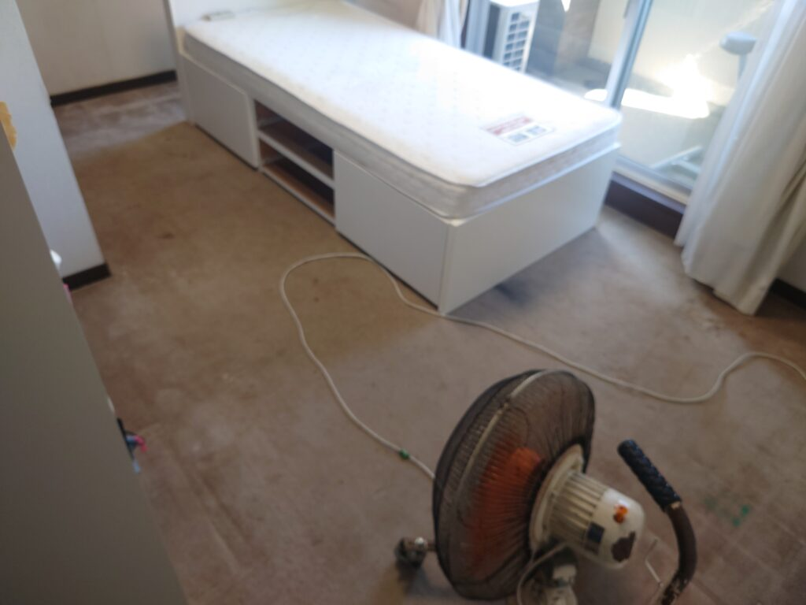
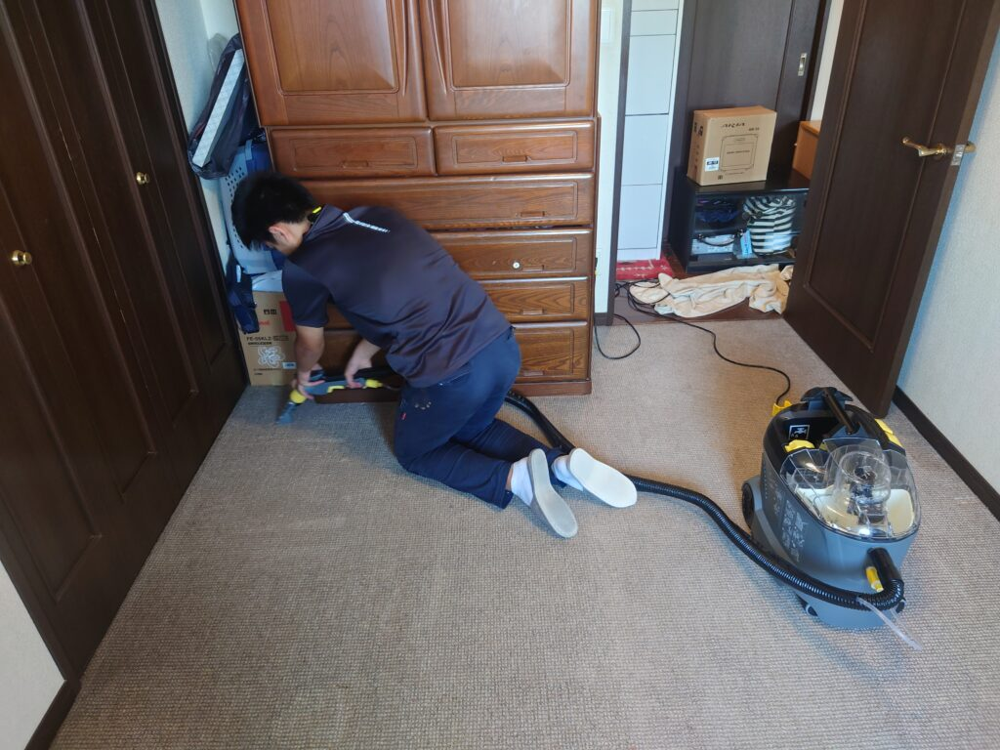

東京都江東区のお客様、カーペットクリーニングをしました。
東京都江東区のお客様、娘さんのお部屋のカーペットの汚れを取りたい!
お母様のご希望を伺い、スペシャルカーペットクリーニングならおそらくご希望通り、娘さんのお部屋のカーペット汚れが取れる事をお伝えして伺いました。
カーペットクリーニングに先立ち、カーペット上のお荷物と、敷物と、ベッドを移動させてから、気になる汚れの部分、気になるシミ汚れを伺い、これはほぼ除去出来る、このシミ汚れは薄くなるのみ等を詳しく説明した後で最新式カーペット洗浄クリーニングで除去しました。
ドイツ製の専用カーペット薬剤を使用して、カーペット内部の汚れ、バクテリア、細かい埃、シミ汚れ等を「薬剤のカプセル成分」に一旦閉じ込めて、汚水を可視化（汚れが吸い取られる様が動画で見られます）しながら、根本から本格クリーニングしました。
カーペット洗浄クリーニング後の、ずっと綺麗になったカーペットの色合いにお客様はご満足頂けました。
カーペット洗浄クリーニングで難しいパートは、開始時にカーペットの上の荷物、家具を速やかに移動する判断力と、適切な移動を実施する機動力が必要な点がまず上げられます。
カーペット洗浄クリーニング自体は、専用薬剤と専用機材を適切にオペレーションして淡々とよごれを適切に除去していく作業の繰り返しです。
その後のパート、乾燥させて毛並みを整える作業は辛抱強くかつセンスの必要なパートになります。
お客様それぞれのニーズに合致したカーペット洗浄クリーニングを実施しておりますので、是非お試しになって下さい、宜しくお願い致します。

